Hi, I'm Gaetan!
Master's in Embedded Software.
I design and build embedded software and hardware for avionics and more.
My PCB wall: Where all PCBs go after a project is finished (the working ones, at least).
It's ever evolving! The current version is ESP32-C3 based with magnetic WS2812B LED boards for ease of use, providing a resolution of a quarter of a degree.
Ongoing projects :
- sub 250 gram combat robot (inertial weapon) : waiting for parts to arrive
- V4 of BEL STM32G4 based with integrated BMS and WS2812B LED MATRIX INDICATOR : PCB arrived & waiting for parts to arrive
- Over engineered solder extraction fan controler powered by 2 cell Li-Po batteries, 2 DC DC converters , powered by a STM8 and written in inline assembler : PCB arrived & waiting for parts to arrive
- V3 of STM32F4 fixed wing flight controller, 6 AXIS IMU, barometer, magnetometer ,ELRS interface, VTX power, GPS interface, Betaflight, Ardupilot compatible, written in C++ : PCB almost done & waiting for parts to arrive
SMOL WS2812B LED MATRIX
(Hardware) 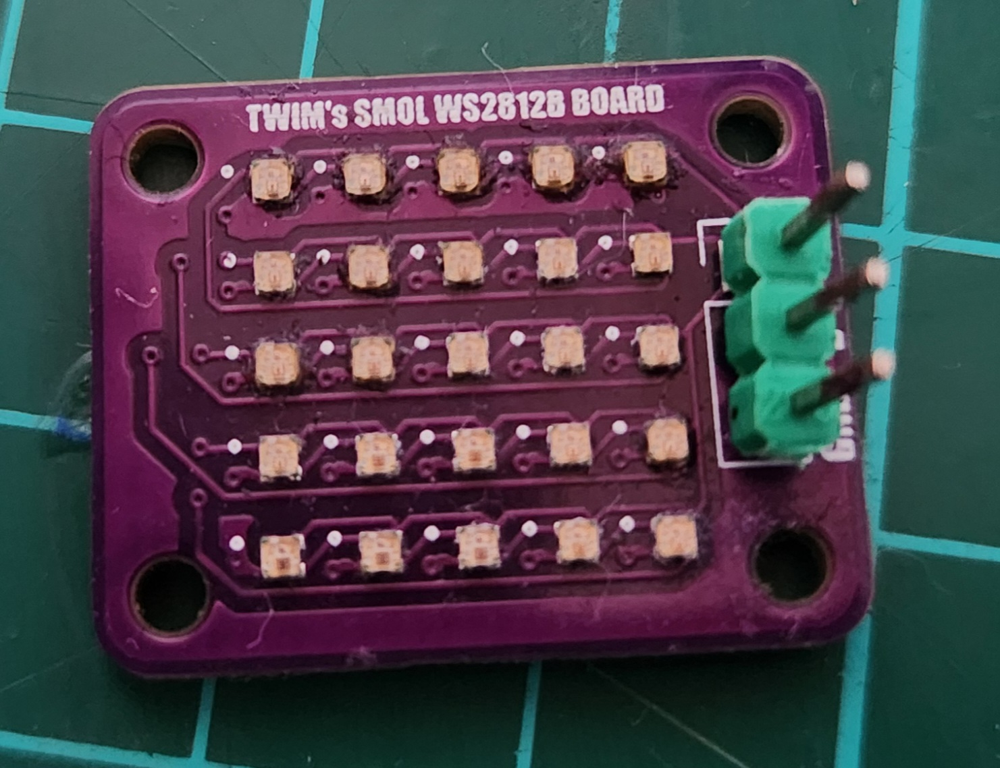
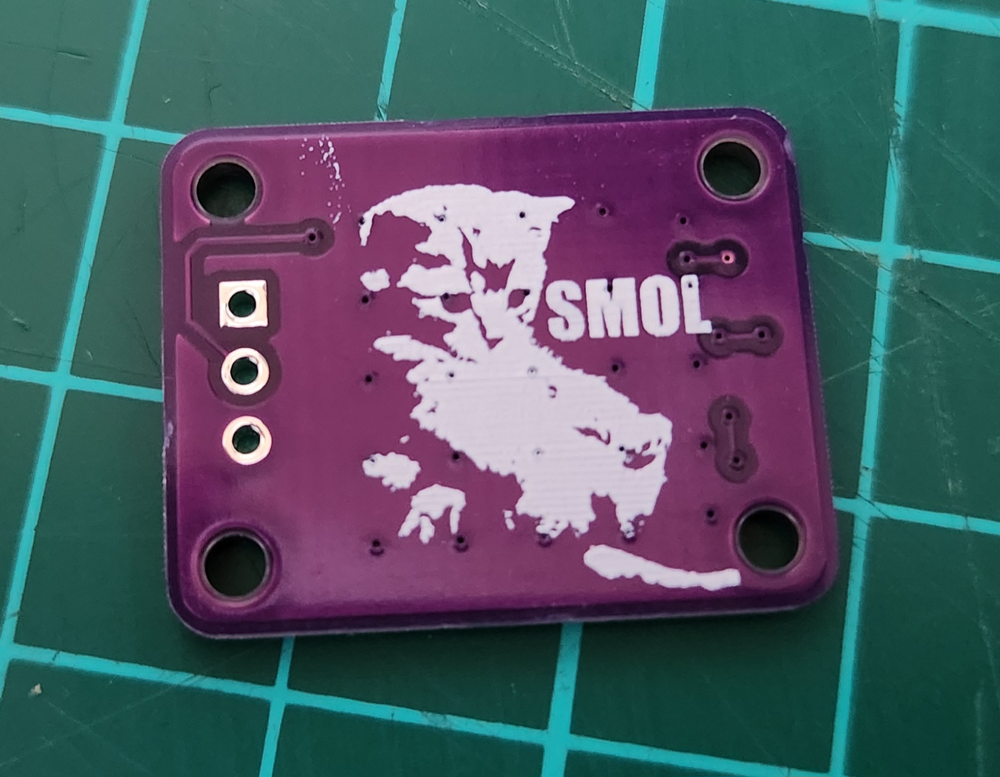
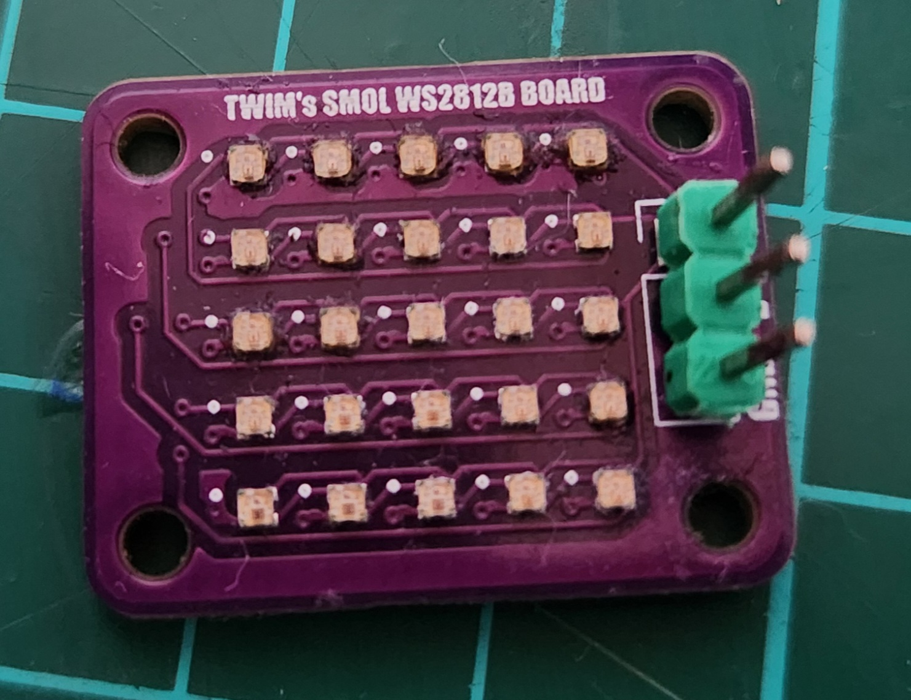
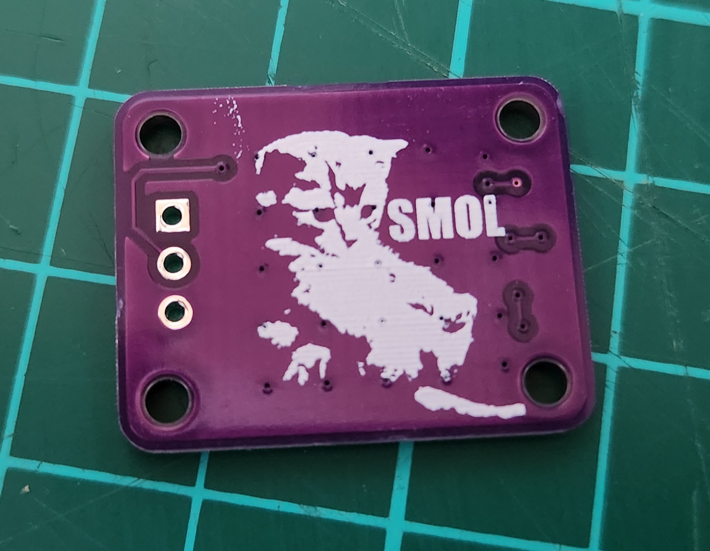
A custom-built SMOL 5x5 WS2812B matrix, but the LEDs are just 1mm x 1mm. I have an obsession with how small things like this can get. I hope to make an even smaller one in the future.
🔗 View on GitHub12V to 5V 3A DCDC Converter
(Hardware) 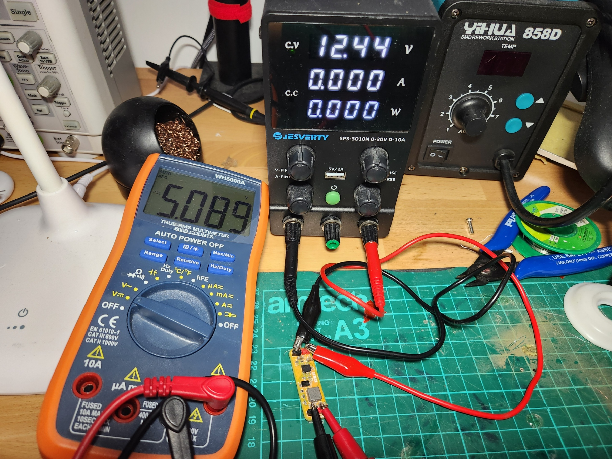
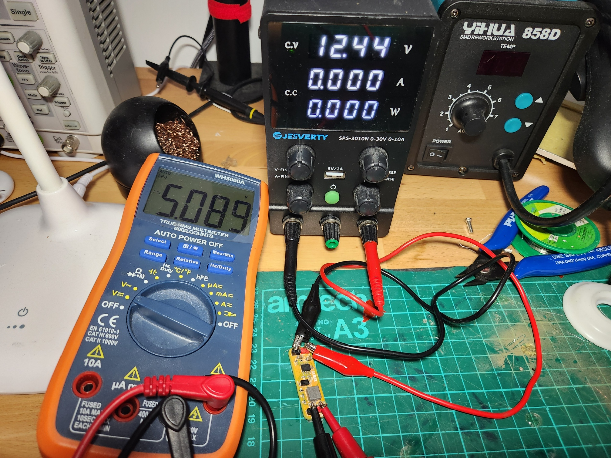
Simple DCDC converter for the prototyping phase of my project. The back art is created by my DFS algorithm.
🔗 View on GitHubTilt Indicator for Competitive Shooting
(Hardware) (Software) 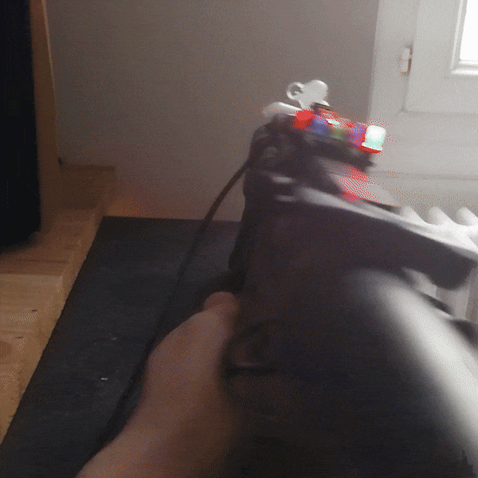
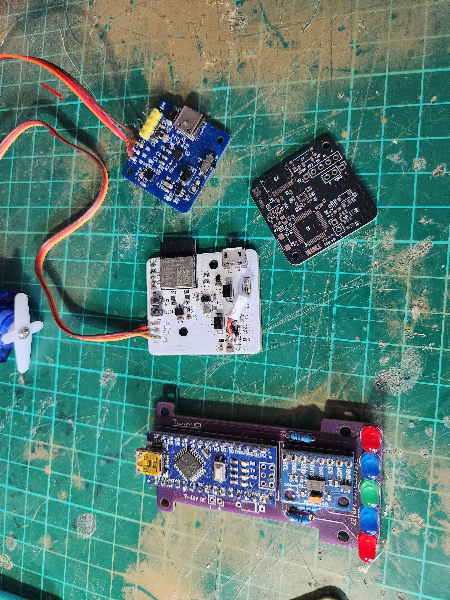
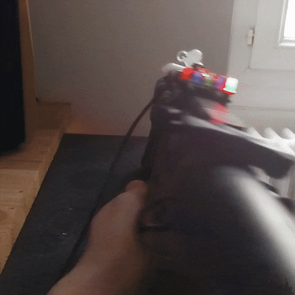
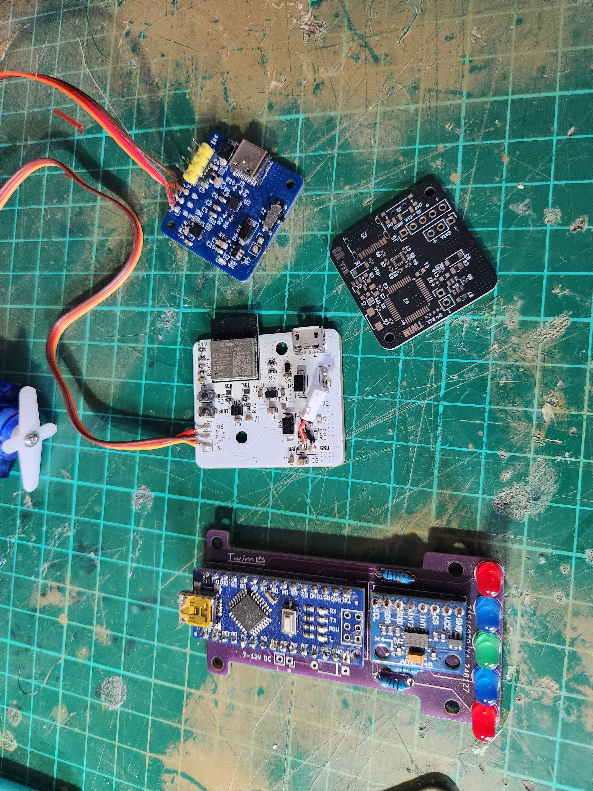
For my brother, who is involved in sport shooting, I created a 3-axis tilt indicator. The design is ever evolving as I'm currently on my 4th iteration, going from Arduino Nano (ATmega328P) → ESP32-C3 → STM8 → STM32G4. I went from built-in THT diodes to external WS2812B LED-based boards, providing a resolution of a quarter of a degree.
🔗 View on GitHubESP32-C3-MINI-BREAKOUT Custom Dev Board
(Hardware) 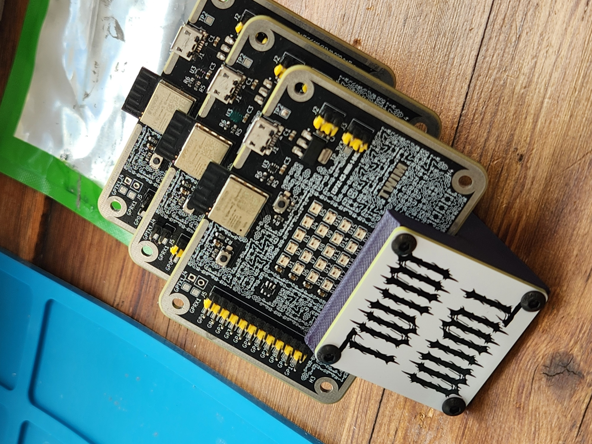
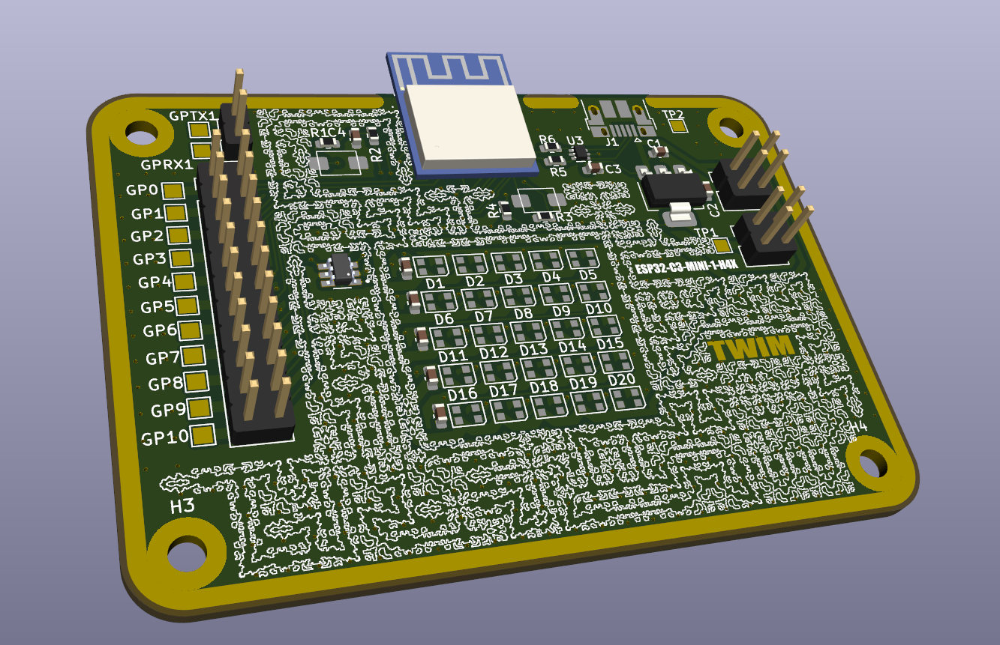
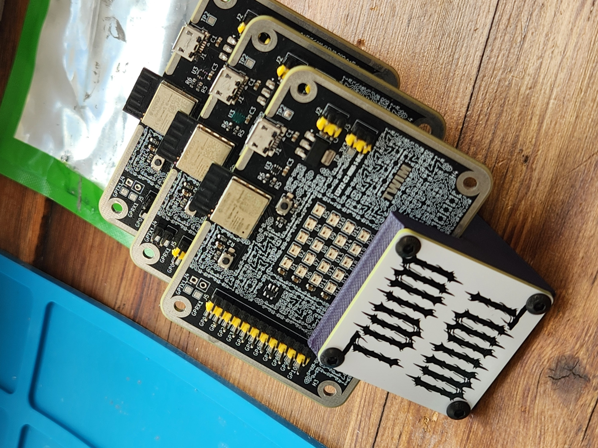
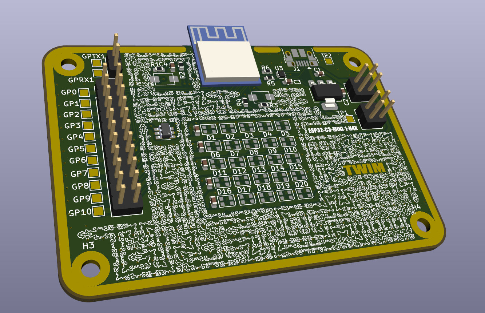
This project showcases a compact and versatile development board built around the powerful ESP32-C3-mini-1U-H4X module, complete with all the necessary KiCad design files and example firmware.
🔗 View on GitHub Check out my build video.Maze Generator (Depth-First Search) & Tile Stitcher for PCB Art
(Software)This project generates randomized mazes inside a 2D grid and renders them as both animated ASCII paths in the terminal and stitched PNG images using tile sprites. Check out the YouTube video!
🔗 View on GitHub1S LiPo/Li-ion BMS (BQ21040DBVT)
(Hardware)This repository contains all the design files for a single-cell (1s) Battery Management System (BMS) for Lithium-Polymer (LiPo) and Lithium-Ion (Li-ion) batteries. The core of this design is the Texas Instruments BQ21040DBVT, a highly integrated battery charger and protection IC.
🔗 View on GitHubDelta-Wing Build
(AVIONIC)

1 hour flight time under 100 grams? A 40cm wingspan delta-wing able to fly for over an hour at a total weight of +/- 93 grams. A proof-of-concept project proving that Li-ion batteries allow for greater energy density in single-cell setups.
TonTon Board
(Hardware)A custom keyboard for my friends and me, designed and built by me.
🔗 View on GitHubTonTon Board (Balatro)
(Hardware) 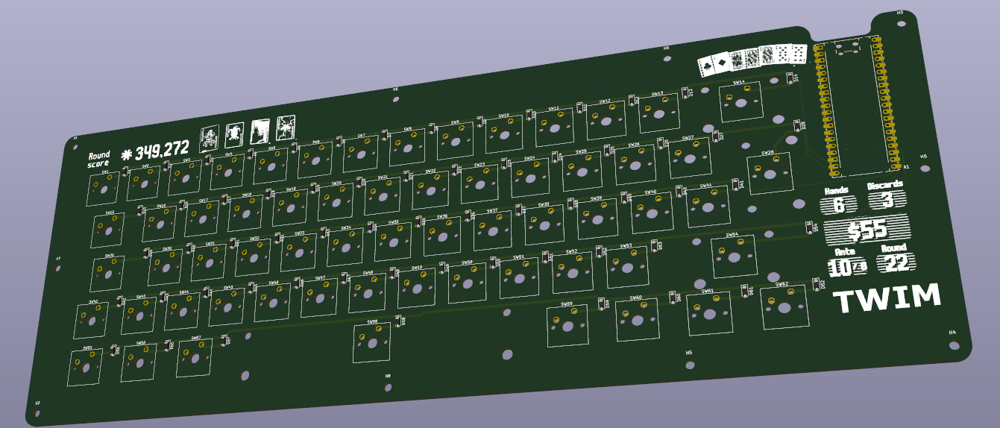
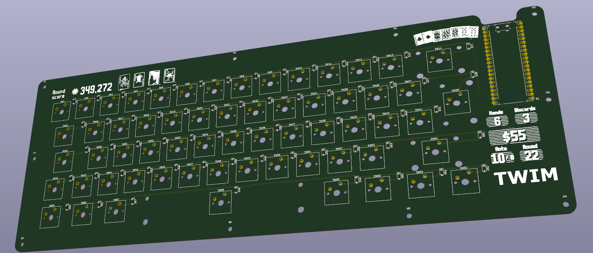
A custom keyboard for my friends and me, designed and built by me. This time it's Balatro themed, featuring a script that creates grids to increase rigidity in the keys.
🔗 View on GitHub3 DOF Space Mouse
(Hardware)


For most of my projects, I design cases or parts for 3D printing using AutoDesk Fusion360. Space mice are not a new concept; they're a tool for controlling CAD programs with better ergonomics. Imagine grabbing the object you are designing and rotating it by pushing down on a knob and moving it as if it were the object itself. This avoids having to press down three or four buttons at a time to pan, orbit, or zoom in and out of 3D space. Name-brand, multi-software compatible space mice can be particularly expensive.
🔗 View on GitHubQMK Macropad
(Hardware)


This multilayer macropad uses QMK firmware and an AutoHotKey script to easily open webpages and applications, and manage active media. Boasting a full custom PCB, it includes 9 assignable buttons and a near-limitless amount of layers to increase the number of available binds. For feedback on the current binds and layer, a **128 x 32 pixel I2C OLED screen** is situated at the top. For the brains (microcontroller), I use the classic **Arduino Pro Micro** for its high GPIO count and small footprint. The PCB was designed in KiCad and produced with **JLC PCB**.
TWIM IMPULSE - Fully Custom Keyboard from PCB to Software
(Hardware)


The need for this custom keyboard was **caused by an everyday constraint**: I use 60% keyboards, but all the PCBs I had built them from were designed for QWERTY layouts. This meant I was using a QWERTY physical layout with an AZERTY software layout at home, while using a classic AZERTY keyboard at university. This situation was not optimal for my workflow or typing speed. I chose to **design and build a custom AZERTY keyboard**.
More effort was put into the design and software compared to my macropad. It runs a key matrix powered by an **ATmega32U4**. I initially used QMK, but transitioned to a more hands-on approach using Arduino libraries like "TinyUSB\_Mouse\_and\_Keyboard," which allows for the simulation of HID interactions with the PC. This gives me complete control over the keyboard's functionality. The possibilities for built-in features are endless, limited only by the 32Kb of memory. This custom PCB also carries some custom art by me. The PCB was designed in KiCad and produced with **JLC PCB**.
Simon Clone Keychain
(Hardware)

A spooky clone of the classic Simon game in a **41mm keychain form factor**, running on a **RP2040** microcontroller.